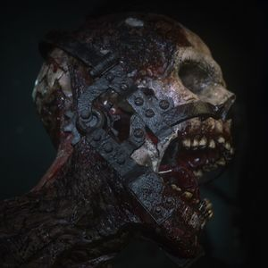

Zombie Profile: Pest
The Pest is a special zombie featured in Call of Duty: WWII's Nazi Zombies mode.
The Pest is a special zombie featured in Call of Duty: WWII's Nazi Zombies mode.
The Wustling is a special zombie in Call of Duty: WWII's Nazi Zombies mode. This zombie serves as a brute-type enemy that charges its prey when enraged. Its English name likely stems from the fact that this type of zombie seems to not be very interested in the player, except when it is attacked, from which the Wüstling will charge at the player, dealing exceptional damage.
The specimen in its past life may have been an easily tempered individual. This perhaps is the reason why it would charge through its prey when attacked.
The Brenner is a sub boss encountered in the Call of Duty: WWII Zombies maps The Final Reich and Gröesten Haus, and is a key part in the main quest within The Final Reich. Brenners are large in size and are armed with a flamethrower which is their primary weapon. Brenners are surprisingly agile despite their size and large fuel tank on their backs and can easily catch up to players, the fuel tank on the Brenner's back can be damaged which can lead to the tank exploding if damaged enough. Upon death, the Brenner will drop its head which will be needed for the main quest of The Final Reich.
In Gröesten Haus, a Brenner will spawn once the player reaches wave 50.
Bombers are a zombie type that appear in the Call of Duty: WWII Nazi Zombies map The Final Reich. They appear to be two zombies fused together with the back facing zombie holding a big bomb which can be shot to create an explosion. If this zombie is killed without shooting the bomb, it will fall to the ground and can still be shot, making it useful in later waves. When a player is in their line of sight, they will begin to move faster in an attempt to detonate on the player.
Treasure Zombies are a rare and special type of zombies found in the Call of Duty: WWII Zombies map The Final Reich.
Treasure Zombies are one of the rarest types of zombies that can spawn on the map. They have a similar appearance to that of Bombers, but have a red and yellow bomb on their back. They also drop Jolts, which the player can pick up. Treasure Zombies also do not attack the player, instead they walk around the map dropping Jolts for the player. They also have more health compared to a normal Bomber.
The player is notified of when a Treasure Zombie appears on the map when Jolts will randomly begin to appear somewhere within the map. Killing a Treasure Zombie will grant the player a random power-up, and occasionally will drop a piece for the Hunter character.
A Treasure Zombie will sometimes spawn once the player completely opens the Ubersprengen.
The Panzermörder is the final boss in the Call of Duty: WWII Nazi Zombies map The Final Reich. Its name translates into "armor-killer", which may allude to the fact that he drops the player's armor very rapidly.
When attacking, Panzermörder depletes one armor per hit.
The Panzermörder is a massive enemy, towering several meters above the player characters and all zombie types. It is constructed out of both metal and flesh. Mechanical joints can be seen sticking out of its knees, while its mouth is made of several human heads, and its hands and feet are made of individual limbs. Klaus Fischer, still alive, is stuck in the center of the monster.
The Ubersprengen is a utility featured in Call of Duty: WWII Nazi Zombies, found in The Final Reich, as well as in a small easter egg within Gröesten Haus. It is essentially the Pack-a-Punch Machine from previous Zombies installments. Unlike its predecessor however, the Ubersprengen can resupply ammo to any non-wonder weapons, including weapons that aren't normally found from Weapon Lockers, such as Mystery Box weapons. This can be done for 4,000 Jolts once the weapon the player wishes to restock is upgraded.
The Ubersprengen is located in the heart of the sewers. It can be found encased by a bone-like cage. Directly in front of the MP-40 weapon locker, there is a red button the player must press. Pressing it will cause the cage to slightly rise and open the three Disposal Tubes around the map.
The player must now use all three Disposal Tubes around the map. Doing so will bring the player into a cage in the sewer, which will immediately rise and turn on a button in the cage. Pressing the button will cause the cage to rise even more. Doing this until all three button are pressed will unlock the Ubersprengen for the rest of the game.
Occasionally, when the player presses a button in a cage, sometimes the button won't work immediately, triggering an event which causes the whole room to be engulfed by a red fog, with several Pests spawning in. The player must eliminate the Pests before the part of the cage will rise up automatically.
In Gröesten Haus, the machine doesn't directly appear in the map, although weapons in the map can still be upgraded. To do this, the player first must aqcuire the Jack-in-the-Box from the Mystery Box. When the player obtains the Jack-in-the-Box, they must throw one onto one of the wooden support beams above the staircase closest to the MP-40, where a visable Jack-in-the-Box logo can be seen. Once the Jack-in-the-Box explodes, the player must now acquire 10,000 Jolts and interact with the piano outside of the Mystery Box room. The piano will take the 10,000 Jolts from the player, but as a result, all of the weapons in the Mystery Box will now be upgraded.
Watch this video by Glitching Queen to find out how to unlock this amazing weapon!
 Frederick Barbarossa's Sword is a mystical blade of unknown origins that once belonged to the German holy Emperor Frederick Barbarossa.
At an unknown certain point in time, the sword was broken into pieces and scattered across the world in order to prevent the Emperor's resurrection.
Frederick Barbarossa's Sword is a mystical blade of unknown origins that once belonged to the German holy Emperor Frederick Barbarossa.
At an unknown certain point in time, the sword was broken into pieces and scattered across the world in order to prevent the Emperor's resurrection.
TheGamingRevolution does a good job explaining how to acquire the sword itself.